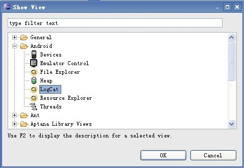
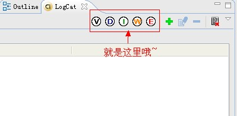
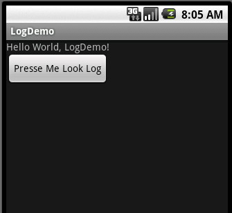
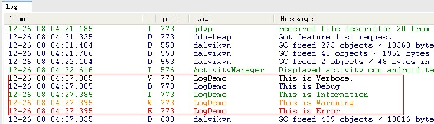

Log图文详解(Log.v,Log.d,Log.i,Log.w,Log.e)
在Android群里，经常会有人问我,Android Log是怎么用的，今天我就把从网上以及SDK里东拼西凑过来，让大家先一睹为快，希望对大家入门Android Log有一定的帮助。 android.util.Log常用的方法有以下5个：Log.v()、Log.d()、Log.i()、Log.w()以及 Log.e()。根据首字母对应VERBOSE，DEBUG,INFO, WARN，ERROR。 1、Log.v 的调试颜色为黑色的，任何消息都会输出，这里的v代表verbose��嗦的意思，平时使用就是Log.v("",""); 2、Log.d的输出颜色是蓝色的，仅输出debug调试的意思，但他会输出上层的信息，过滤起来可以通过DDMS的Logcat标签来选择. 3、Log.i的输出为绿色，一般提示性的消息information，它不会输出Log.v和Log.d的信息，但会显示i、w和e的信息 4、Log.w的意思为橙色，可以看作为warning警告，一般需要我们注意优化Android代码，同时选择它后还会输出Log.e的信息。 5、Log.e为红色，可以想到error错误，这里仅显示红色的错误信息，这些错误就需要我们认真的分析，查看栈的信息了。 下面是我做的一个简单的LogDemo(Step By Step): Step 1:准备工作(打开LogCat视窗)。 启动Eclipse,在Window->Show View会出来一个对话框，当我们点击Ok按钮时，会在控制台窗口出现LogCat视窗。如下图：   Step 2:新建一个Android工程，命名为LogDemo。 Step 3:设计UI界面，我们在这里就加了一个Button按钮(点击按钮出现Log日志信息)。 Main.xml代码如下:
<?xml version="1.0" encoding="utf-8"?>
<LinearLayout xmlns:android="http://schemas.android.com/apk/res/android"
android:orientation="vertical"
android:layout_width="fill_parent"
android:layout_height="fill_parent"
>
<TextView
android:layout_width="fill_parent"
android:layout_height="wrap_content"
android:text="@string/hello"
/>
<Button
android:id="@+id/bt"
android:layout_width="wrap_content"
android:layout_height="wrap_content"
android:text="Presse Me Look Log"
/>
</LinearLayout>
Step 4:设计主类LogDemo.java,代码如下:
import android.app.Activity;
import android.os.Bundle;
import android.util.Log;
import android.view.View;
import android.widget.Button;
public class LogDemo extends Activity {
private static final String ACTIVITY_TAG = "LogDemo";
private Button bt;
public void onCreate(Bundle savedInstanceState) {
super.onCreate(savedInstanceState);
setContentView(R.layout.main);
// 通过findViewById找到Button资源
bt = (Button) findViewById(R.id.bt);
// 增加事件响应
bt.setOnClickListener(new Button.OnClickListener() {
@Override
public void onClick(View v) {
Log.v(LogDemo.ACTIVITY_TAG, "This is Verbose.");
Log.d(LogDemo.ACTIVITY_TAG, "This is Debug.");
Log.i(LogDemo.ACTIVITY_TAG, "This is Information");
Log.w(LogDemo.ACTIVITY_TAG, "This is Warnning.");
Log.e(LogDemo.ACTIVITY_TAG, "This is Error.");
}
});
}
}
Step 5:运行LogDemo工程，效果如下:

当我们点击按钮时，会触发事件，在Logcat视窗下有如下效果:
